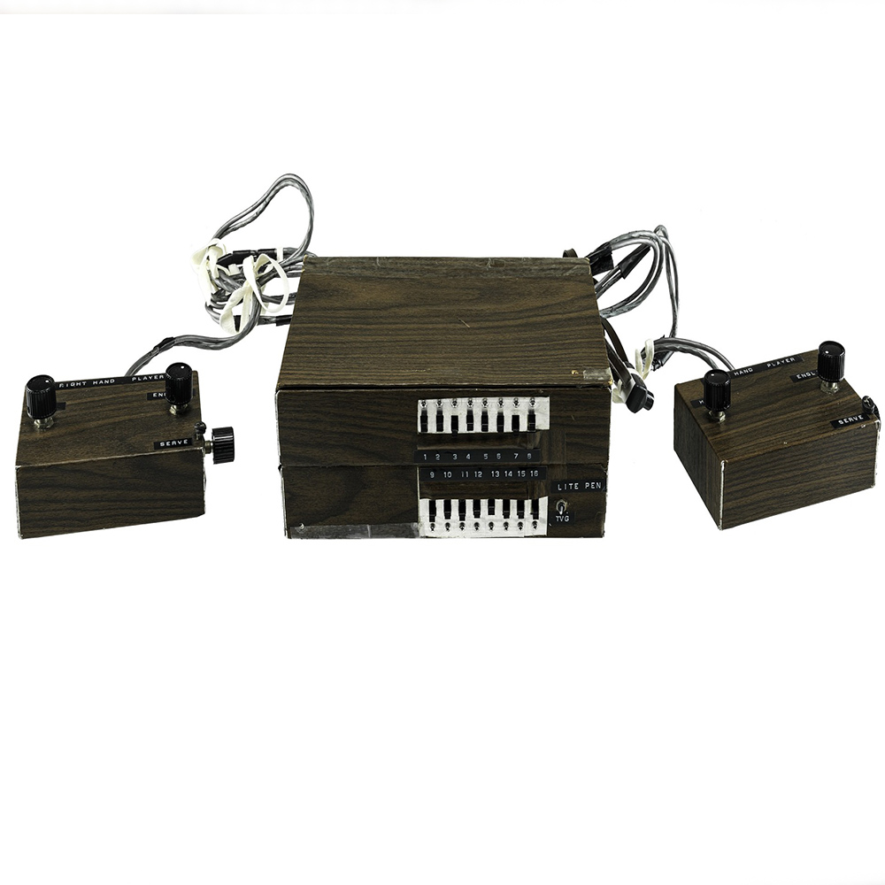
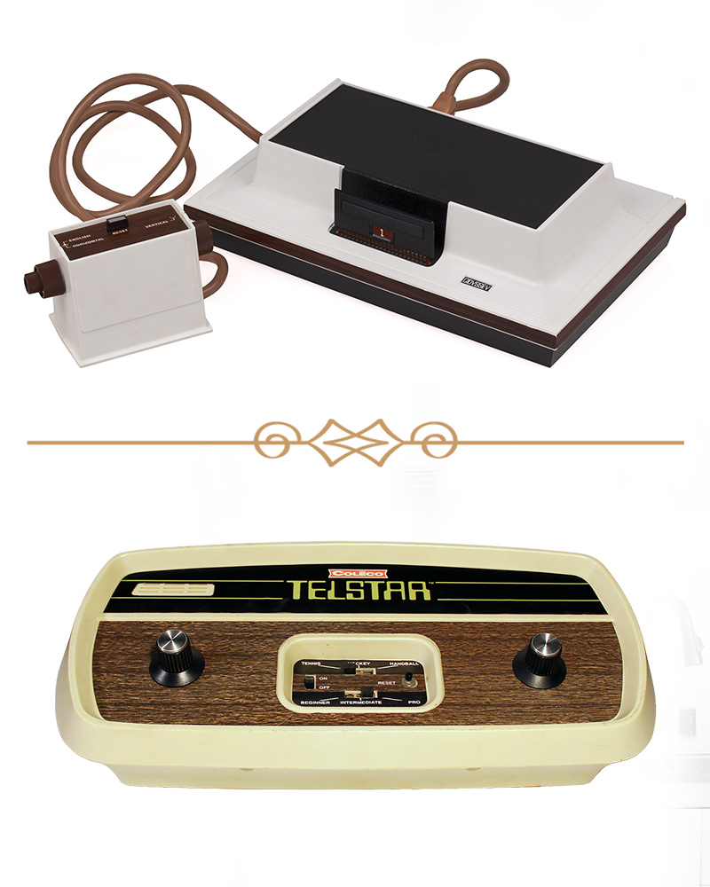
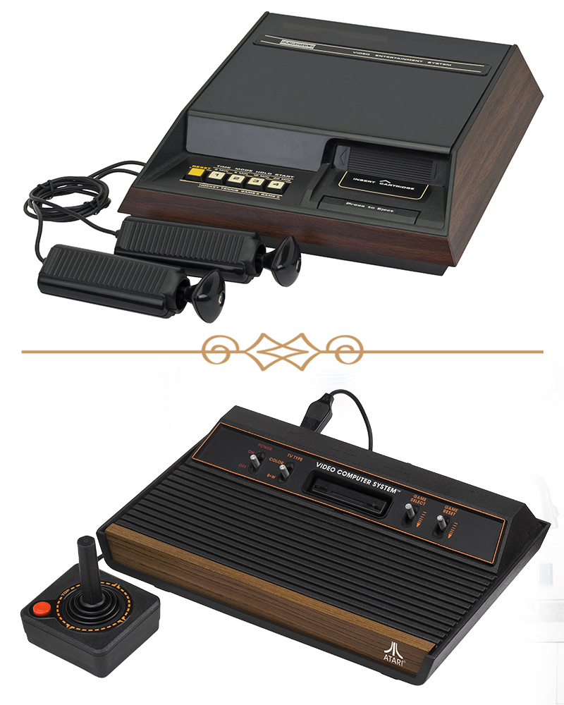
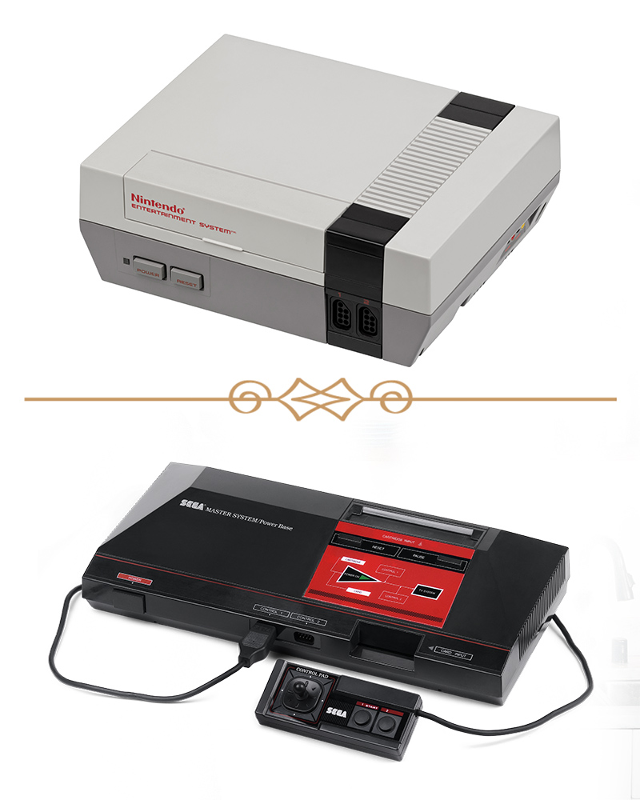
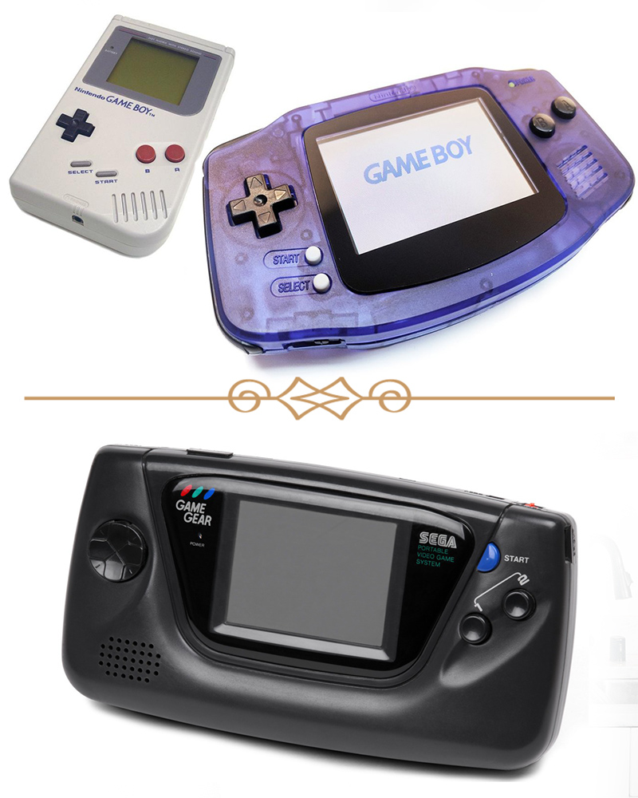
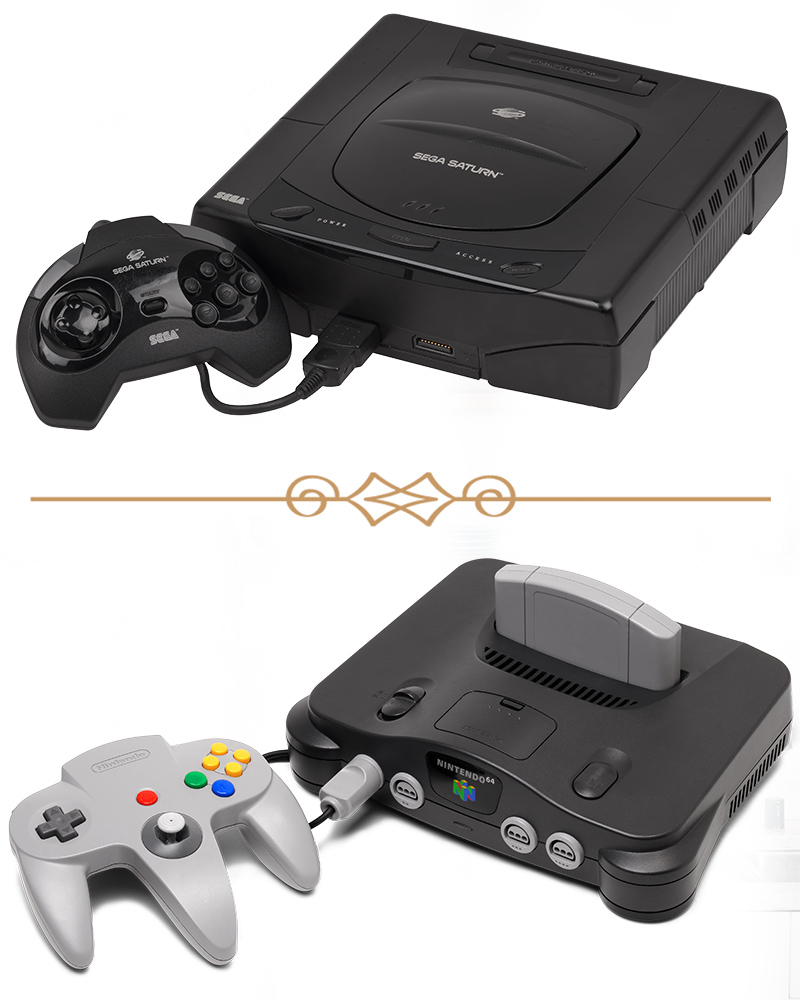
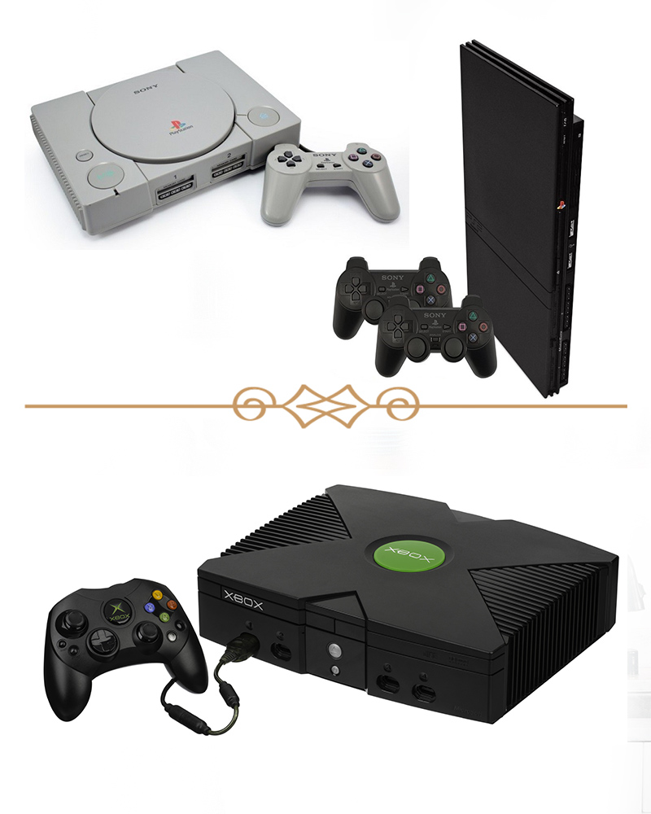
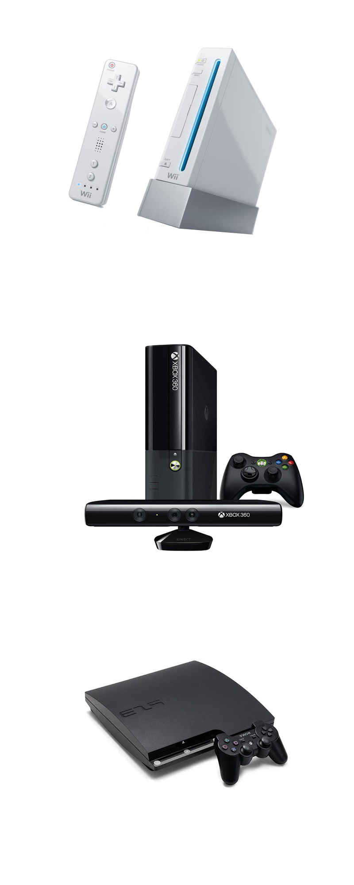
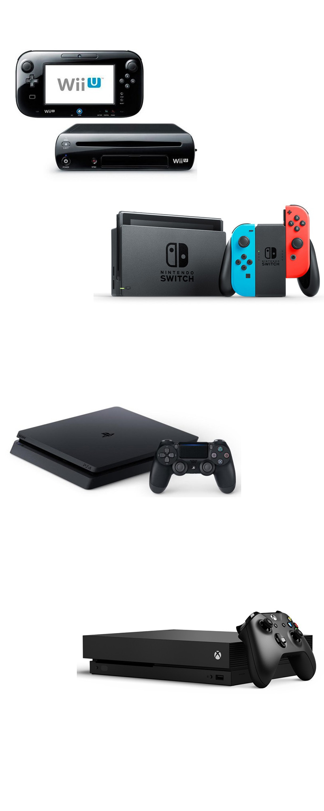

Console's Evolution.

Emanuel C.
The father of all
Ralph H. Baer
Ralph H. Baer
Creator of "The Brown Box"Ralph Baer was a German engineer and inventor naturalized American, pioneer of electronic games. In 1969, he developed on his own the first idea for a home videogame console, the Magnavox Odyssey. Known as the "father of video games".

The Brown Box
The Odyssey was developed by Ralph Baer, who started working on a prototype in 1966 and finished it around 1968. This prototype, known as the Brown Box, is now at the National Museum of American History of the Smithsonian Institution in Washington. It was only in May 1986 that the brand arrived in Brazil with the Odyssey 2, a competitor of the Atari 2600.
Generations
We have eight generations about consoles history. And now we are going to the ninth generation.

First Generation
Ralph Baer was the first to idealize a videogame console, creating his prototype called "The Brown Box" in 1966, bu tonly in 1972 it was released, with the name of the first console created called "Magnavox Odissey."
I find game desing fascinating... It is a new way to make art work.
— Ralph H. Baer

Second Generation
The second generation is marked by anastonishing innovation. With the launch of "Fairchild ChannelF", the Company "Fairchild Semiconductor" was launched, at the end of 1976, with something innovative that lasted for nearly two decades, the programmable cartridges. Other companies have launched their consoles, such as Atari, Matell and Magnavox. Generating a "war" of consoles.

Third Generation
With the gigantic drop in the market due to saturation, videogames needed an "up". Thinking about it, Nintendo launched the "NES" and "Famicom" consoles, in a new era that was called the 8-bit generation. The audio and video chips were much faster than all the other consoles, the scenery of the games and characters were much more detailed than normal.

Fourth Generation
This new era, called the 16-bit era, was where it had the main war of consoles, Nintendo x Sega. And to help, in this medium existed a Japanese company, NEC, launching the PC Engine. It had twice the graphics quality, compared to Sega and Nintendo, plus lower costs to be bought by more people. One of the main improvements in the games, that the games were made with more phases different from each other and longer, precisely to arrest the user in gambling. Layouts of consoles, controls and phases more beautiful and enriched with details.

Fifth Generation
Being exploited at the end of the fourth generation, in 1986, 3D began to become the newest market. Where Saturn (Sega) and Nintendo 64 (Nintendo) competed for those who would reign in the market, a company, then a snob in the electronic gaming market, Sony, had its projects rejected by Nintendo, Sega and Philips. His project was called"PlayStation" and was launched at a time where the competition was, relatively nil, in addition to a price more accessible to all, interesting architecture for developers, became the preference of everyone quickly because it answered All audiences (general public and programmers).

Sixth Generation
With the rise of Sony, Sega, who was once the leader of everything and everyone, ended up being put into oblivion. Even creating the revolutionary console, the DreamCast, they failed to keep on the market. With this market becoming increasingly centralized in a company, Microsoft ended up launching on the market, in 2001, the XBOX, where the same was basically a videogame with processors and graphics chips from a computer of the time. At that time, the drivers of the consoles did not have so many disparities.

Seventh Generation
Originally released in 2006, the Nintendo Wii inaugurates the seventh generation of consoles, causing a revolution on everything in the market, and marking the return of Nintendo in the market, with the control that had motion sensor. Returning with his consecrated games, Mario, Zelda and Pokémon with more interactions when moving the hand, the Nintendo Wii fired quickly in sales, rising from the ashes, basically. As said, the Nintendo fell in the taste of everyone selling nearly 84 million units around a year, the XBOX 360 with just over 30 million units sold and the PlayStation 3 with only 23 million units.

Eight Generation
Powered by the success of the Nintendo Wii, Nintendo announced the Wii U at 2011 on this console, where the console Joystick would have an interactive screen that would help with games. And also at that same time was announced the Nintendo Switch, which makes an intermediate console with a Tablet. Where two Joysticks are coupled that can be removed from the Tablet and played through wirelessly.